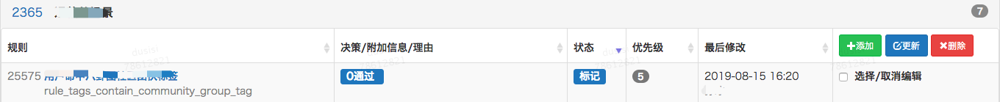
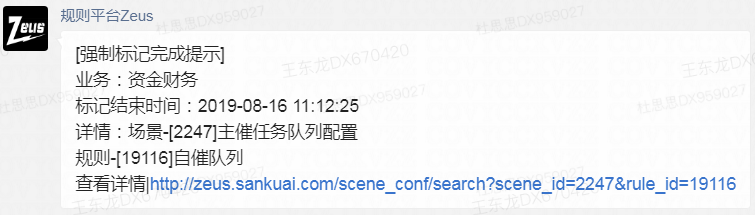
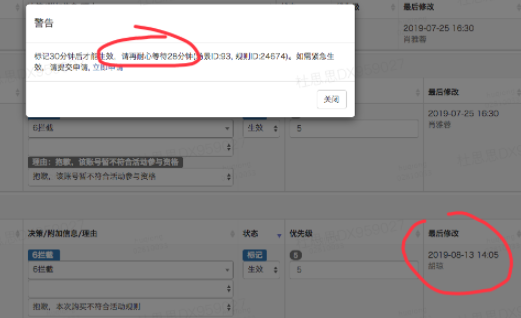
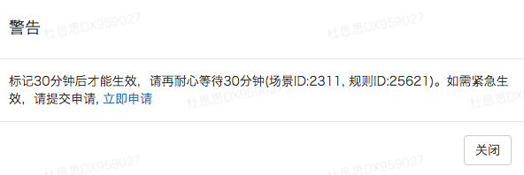
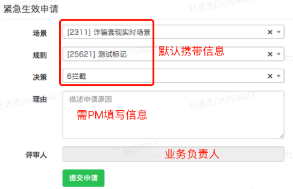

说明：强制标记功能
一、背景
规则在场景中配置发生变动存在对线上产生直接影响的情况，因此需灰度一段时间后，再进行生效上线；
解决：因误操作或灰度时间不足导致生产误伤case
二、名词解释
标记：规则在场景中的状态，规则逻辑的灰度执行，即：与生效规则类似会实时执行，但决策信息不实时返回给上游业务方，不影响决策；策略PM可在实时日志查询中查看标记规则的命中情况
强制标记：为避免误操作或灰度时间不足导致生产误伤case，因此在原有标记功能上增加计时要求，标记满足30分钟后方可进行规则在场景中“生效”的切换
规则版本：规则表达式每次修改都会生成一个规则版本号
三、操作说明
Step1：规则在场景中添加后，默认为标记状态

Step2：强制标记满足30分钟后，系统推送完成通知

策略PM可验证规则命中情况是否符合预期（在实时日志查询中）
Step3：符合业务预期即可切换“生效”即可
若不符合业务预期，可修改规则逻辑，但修改后仍需强制标记30分钟
四、FQA
Q1:时间统计错误？强制标记提示时间和规则在场景中最后修改时间有差异

A：如上样例：规则在场景中最初标记时间20190813 14:05 ，用户预操作规则生效时间 20190815 21:06 ，但用户在20190815 21:03 修改过该规则，因此用户需要等待28分后方可切换生效
即：若已经在场景中配置，但后续修改过规则，仍会重新计时。计时标准：规则-规则版本-场景
Q2:强制标记的逻辑具体是什么？
A：场景-规则-规则版本
Q3:怎么只有我的业务方有强制标记功能？
A：强制标记功能是可按照业务方进行配置的，通常是业务负责人同Zeus沟通开通此功能；
Q4:已经有标记功能了为什么还有强制标记？
A：通过历史发生case观察，存在PM标记较短时间就生效，未观察一段时间看更多数据情况，因此拍定30分钟作为约束；
Q5:有强制更新的业务组，若需要将规则紧急生效怎么办？
A：可申请紧急生效流程，经业务负责人大象审批后即可生效；

